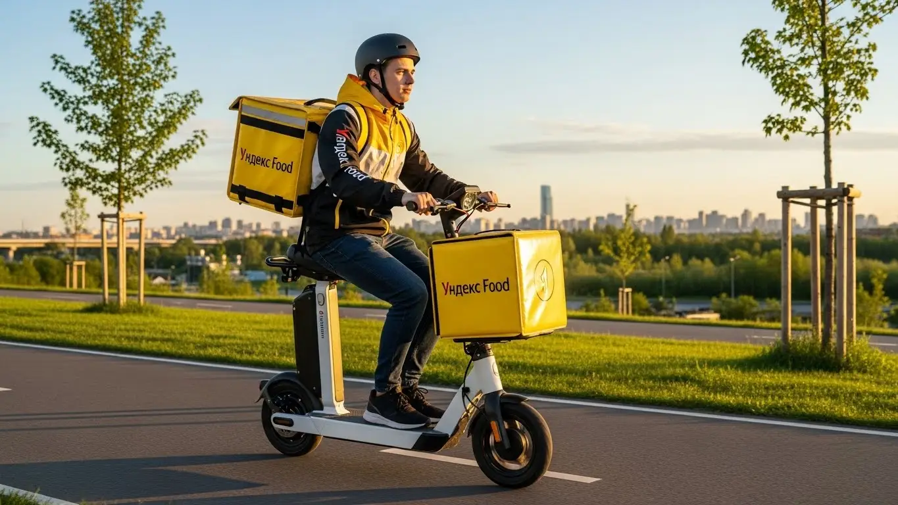
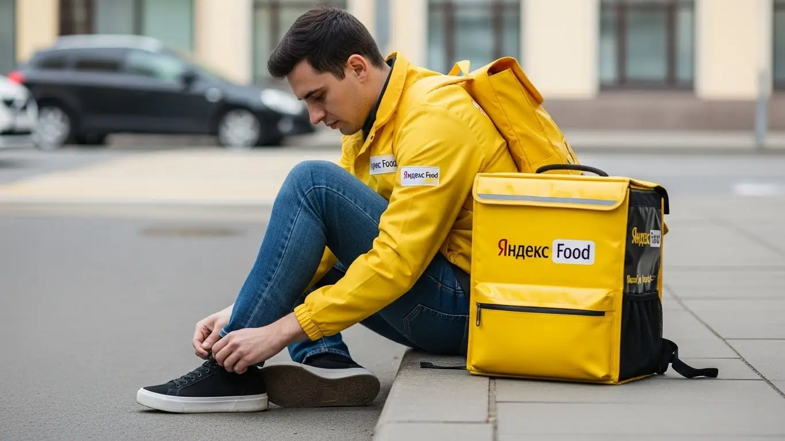

Работа курьером Яндекс Еды в Гатчине 2025-2026: доход и условия
- Работа курьером Яндекс Еды в Гатчине: для кого эта вакансия и что вы получите
- Сколько вы будете зарабатывать курьером в Гатчине: калькулятор дохода и разбор выплат
- Реальный заработок курьера в Гатчине: смены и месячный доход
- График работы и форматы занятости
- Требования к кандидату и документы
- Самозанятость, налоги и юридическая чистота
- Пошаговое оформление и первый выход на линию в Гатчине
- Пешком, на вело или на авто: что выгоднее в Гатчине
- Районы, маршруты и «топовые» зоны заказов в Гатчине
- Безопасность, страховка, штрафы и оплата простоя
- Плюсы и возможные минусы работы курьером в Гатчине
- Реальные истории и отзывы курьеров из Гатчины
- Ответы на главные вопросы о работе курьером Яндекс Еды в Гатчине
- Короткие ответы на главные вопросы
- Итоги и ваш следующий шаг в Гатчине
Все города
Думаешь, работа курьером Яндекс Еда в Гатчине — это просто крутить педали и получать лёгкие деньги? А теперь представь: ты убиваешь подвеску машины во дворах Аэродрома, стоишь в глухой пробке на проспекте 25 Октября в час пик или месишь грязь под ледяным дождём, а счётчик заказов едва тикает. В итоге за день ты заработал меньше, чем потратил на бензин и нервы. Давай начистоту: без знания местной специфики именно так и будет. Это не Питер, здесь свои правила игры.
Поверить красивой рекламе про «доход до 100 тысяч» — самый быстрый способ разочароваться уже через неделю. На деле твой реальный заработок в Гатчине будет зависеть не от обещаний, а от того, знаешь ли ты, как работает приоритет, сколько на самом деле съедает налог самозанятого и амортизация велосипеда, и в каких районах — на Въезде или в Мариенбурге — в обед есть спрос, а где — мёртвая зона. Большинство новичков здесь сливаются в первый же месяц, потому что совершают одни и те же ошибки, теряя время и деньги.
В этом гиде я разложу всё по полкам. Мы честно посчитаем, сколько можно заработать пешком, на велосипеде и на авто с учётом гатчинских реалий. Разберём, в каких районах и в какое время самые «жирные» заказы. Выясним, за что на самом деле прилетают штрафы и как их избежать. Я покажу на примерах, как погода и пробки на переездах влияют на твой дневной кэш, и сравню условия с тем, что предлагают другие сервисы в нашем городе. Если же ты хочешь сразу перейти к делу, то самые актуальные требования и анкета для старта всегда доступны на официальной странице, где детально описана работа курьером Яндекс Еда в Гатчине.
Меня зовут Алексей. Я сам не один год откатал с жёлтым рюкзаком по Гатчине, а сейчас у меня свой небольшой таксопарк-партнёр, так что я знаю всю эту кухню изнутри, а не по рекламным буклетам. Расскажу как есть — без прикрас, с реальными цифрами и советами, которые сэкономят тебе кучу нервов и денег. В общем, устраивайся поудобнее. Сейчас будем во всём разбираться, начиная с самого главного — с денег.
Прежде чем нырять в детали, вот короткий гид по главным темам статьи, чтобы ты сразу нашёл нужное.
Что ты точно узнаешь из этого разбора про работу в Гатчине
В этой статье ты ТОЧНО узнаешь:
- Сколько реально можно заработать в Гатчине за смену пешком, на вело и на авто, и как погода влияет на доход?
- В каких районах Гатчины — в Центре, на Аэродроме или на Въезде — самые «жирные» заказы и как не кататься впустую?
- Как устроена самозанятость, сколько на самом деле уходит на налоги и за что могут понизить рейтинг?
- Что выгоднее выбрать в Гатчине — пеший, вело- или автоформат, и как правильно планировать слоты через «Яндекс Про»?
- Какие документы нужны для старта и как быстро можно выйти на первую смену и получить первые деньги?
- Как работает оплата простоя, если заказов мало, и какая страховка защищает курьера на смене?
А если тебе некогда читать всю статью — переходи сразу к заключению, где ты найдёшь короткие ответы на все эти вопросы и указания, в каких разделах искать подробности.
А чтобы было нагляднее, вот основные цифры по Гатчине в одной картинке.
Работа курьером в Гатчине: ключевые цифры
Доход в час
350–500 ₽
В пиковые часы с бонусами и повышенным спросом
За смену 8 часов
2 800–4 000 ₽
Реальный доход зависит от количества заказов и погоды
Расходы на смене
150–300 ₽
На связь, питание и мелкие нужды (для вело/пеших)
Чаевые от клиентов
~15% заказов
Дополнительный доход, который полностью ваш
Работа курьером Яндекс Еды в Гатчине: для кого эта вакансия и что вы получите
Кому подойдёт эта работа в Гатчине
Давай по-честному, эта работа не для всех, но для многих в Гатчине она может стать настоящей находкой. В первую очередь, это отличный вариант для студентов. График можно подстроить под лекции и сессии, выходить на пару часов после учёбы и иметь свои деньги на карманные расходы, не клянча у родителей. Во-вторых, это идеальная подработка для тех, у кого уже есть основная работа со сменным графиком, например, 2/2 или 3/3. В свободные дни можно спокойно откатать несколько смен и получить весомую прибавку к зарплате.
Также сюда приходят люди, которые временно остались без работы и ищут быстрый источник дохода. Оформление в качестве самозанятого занимает минимум времени, и часто уже на следующий день можно выйти на линию и получить первые деньги. Опыт не требуется — всему научат. И конечно, это отличный вариант для водителей, которые хотят, чтобы их автомобиль не простаивал, а приносил доход. Если тебе важна свобода, ты не любишь сидеть в офисе с 9 до 18 и хочешь, чтобы выплаты приходили каждый день, а не раз в месяц — эта вакансия для тебя.
Главные преимущества для жителей районов Аэродром, Въезд, Центр
Одно из главных удобств работы в Гатчине — её компактность. Тебе не придётся тратить по полтора часа, чтобы добраться до «рыбной» зоны. Живёшь в микрорайоне Аэродром? Отлично, прямо там куча заказов из местных кафе и магазинов. Вышел из дома — и ты уже на смене. То же самое касается и района Въезд: здесь много новостроек, а значит, и много клиентов, которые заказывают еду на дом.
Жителям центральных улиц, например, проспекта 25 Октября или улицы Карла Маркса, ещё проще. Тут самая высокая концентрация ресторанов, и заказы сыплются один за другим, особенно в обеденное время и по вечерам. Не нужно ехать через весь город, стоять в пробках на выезде. Ты работаешь в своём или соседнем районе, отлично знаешь все дворы и короткие пути, что напрямую влияет на твою скорость и, как следствие, на заработок. Экономия времени и денег на дорогу — это жирный плюс.
Краткое обещание по доходу и условиям
Если говорить о деньгах, то цифры в Гатчине вполне достойные. На подработке, выходя на 3–4 часа в день, можно спокойно делать 1200–1800 рублей за смену. Если же рассматривать это как полную занятость, то активный автокурьер при 8-часовом рабочем дне может зарабатывать и 3500–4500 рублей. В месяц при полной занятости вполне реально выйти на доход в 60 000–85 000 рублей, особенно если работать в пиковые часы и выходные.
Ключевые условия работы просты и прозрачны. Во-первых, свободный график — ты сам выбираешь дни и часы работы через приложение «Яндекс Про». Во-вторых, ежедневные выплаты на карту — не нужно ждать конца месяца, чтобы получить заработанное. В-третьих, начать можно без опыта — всему необходимому научат на коротком онлайн-инструктаже. По сути, от тебя требуется только желание работать, смартфон и термосумка, которую обычно предоставляет сервис.
Сколько вы будете зарабатывать курьером в Гатчине: калькулятор дохода и разбор выплат
Из чего складывается доход курьера
Твой заработок — это не просто фиксированная ставка, а конструктор из нескольких частей. Поняв, как он устроен, ты сможешь влиять на итоговую сумму. Во-первых, есть базовая оплата за каждый выполненный заказ, которая включает в себя подачу в ресторан и вручение клиенту. Во-вторых, к ней добавляется плата за расстояние — чем дальше везти, тем больше денег ты получишь.
Кроме того, есть повышающие коэффициенты. В приложении «Яндекс Про» ты увидишь зоны, подсвеченные разными цветами — от жёлтого до фиолетового. Это так называемые зоны высокого спроса, где заказов больше, чем курьеров. Работая там, ты получаешь доплату к каждому заказу. Такие коэффициенты обычно появляются в плохую погоду, в обеденное время (с 12 до 15) и по вечерам (с 18 до 21), особенно в пятницу и выходные.
Не стоит забывать и про другие доплаты: бонусы за выполнение персональных целей (например, сделать 20 заказов за три дня) и чаевые от клиентов, которые полностью достаются тебе. А ещё сервис платит за долгое ожидание в ресторане (оплата простоя) и может компенсировать дорогу, если заказ был очень далеко.
Как пользоваться калькулятором дохода
Чтобы прикинуть свой возможный заработок, на сайте есть специальный калькулятор. Пользоваться им проще простого. Сначала выбираешь свой город — Гатчина. Затем указываешь, как планируешь доставлять: пешком, на велосипеде или на своём автомобиле. После этого выставляешь, сколько часов в день и сколько дней в неделю ты готов работать, например, 4 часа 5 дней в неделю. Нажимаешь кнопку «Рассчитать», и калькулятор показывает примерный диапазон твоего дохода за день и за месяц. Важно понимать, что это ориентировочные цифры. Реальный заработок будет зависеть от спроса, погоды и твоей скорости, но как отправная точка для планирования — это очень удобный инструмент.
Прикинь свой доход в Гатчине
Твой примерный доход в месяц:
Это ориентировочный расчёт. Реальный заработок зависит от спроса, погоды, твоего рейтинга и бонусов. Цифры основаны на средней ставке для Гатчины.
Этот калькулятор дает хорошее представление о возможном доходе. А если хочешь увидеть самые актуальные условия, требования и сразу подать заявку, загляни на официальную страницу: работа курьером Яндекс Еда в твоём городе. Там собрана вся информация в одном месте.
Примеры расчёта для пешего, вело- и авто‑курьера в Гатчине
Давай на конкретных примерах разберём, сколько можно заработать в Гатчине.
- Пеший курьер. Допустим, ты студент и работаешь в центре, в районе Соборной улицы. Берёшь короткие смены по 4 часа после пар. Заказы здесь в основном из кафе и ресторанов, дистанции небольшие. За такую смену в будний день можно заработать 1200–1600 рублей. В месяц, работая 4-5 дней в неделю, выйдет около 25 000–30 000 рублей.
- Велокурьер. Ты живёшь в микрорайоне Аэродром и доставляешь заказы по нему и в соседний Въезд. На велосипеде ты быстрее пешего, поэтому можешь брать больше заказов на средние дистанции. За 6-часовую смену в субботу твой доход может составить 2200–2800 рублей. Это уже серьёзная подработка.
- Автокурьер. Это самый прибыльный вариант. Ты работаешь полный день, 8–10 часов, и берёшь заказы по всей Гатчине, включая отдалённые районы вроде Мариенбурга, и даже в ближайшие посёлки. В плохую погоду, когда пешие и велокурьеры не так активны, у тебя будет максимум заказов с высокими коэффициентами. За такую смену можно заработать 4000–5000 рублей и больше. При полной занятости доход автокурьера в Гатчине может достигать 80 000–90 000 рублей в месяц.
Вот реальный кейс. Мой знакомый, парень 30 лет, сначала работал пешим курьером по выходным. Зарабатывал по 1500-2000 рублей за день. Потом купил недорогой велосипед и начал катать по 6-8 часов. Его доход сразу вырос до 2500-3000 рублей за смену, потому что он стал успевать делать больше заказов на большие расстояния. В итоге за месяц набегала приличная сумма, которая помогла ему закрыть кредит.
Как видишь, твой заработок в Яндекс Еде и Доставке напрямую зависит от твоего подхода. Это не просто оклад, а система, которой можно и нужно управлять. Понимая, из чего складываются деньги, следя за картой спроса в приложении и выбирая самый эффективный способ передвижения, ты сможешь значительно увеличить свой доход. Мой совет: если есть возможность, начинай на велосипеде — это золотая середина по скорости и затратам.
Реальный заработок курьера в Гатчине: смены и месячный доход
Теперь к самому главному — к деньгам. Сколько реально платят курьерам в Гатчине, а не в рекламных буклетах для Москвы? Цифры, которые я назову, — это не потолок, а средний доход, который получают мои знакомые курьеры. Твой заработок напрямую зависит от трёх вещей: как ты передвигаешься, сколько часов работаешь и, самое главное, когда и где ты это делаешь.
Диапазон дохода для подработки и полной занятости
Если ты ищешь подработку на 2–4 часа в день, чтобы закрыть кредит или просто иметь карманные деньги, то вот реальные цифры для Гатчины. Пеший курьер в центре, работая в обеденный или вечерний пик, может заработать 800–1500 рублей за смену. Велокурьер за то же время получит больше за счёт скорости — где-то 1200–2000 рублей. Самый высокий доход у автокурьера, который может за 4 часа активной работы в пиковые часы получить 1800–3000 рублей.
При полной занятости, когда ты работаешь по 8–10 часов 5 дней в неделю, зарплата уже серьёзнее. Пеший курьер в месяц может рассчитывать на 40 000 – 55 000 рублей. Велосипедист, который активно катается по районам вроде Аэродрома или Въезда, выйдет на 50 000 – 70 000 рублей. Курьер на своем авто, который не боится дальних заказов в Мариенбург или Химози, может зарабатывать и 70 000 – 100 000 рублей в месяц, но из этой суммы нужно вычесть расходы на бензин. Это реальные условия работы и зарплата в Гатчине, если подходить к делу с умом.
Как район, время суток и погода влияют на доход
Твой доход — это не просто ставка за час, он постоянно меняется. Главный инструмент для увеличения заработка — это повышенные коэффициенты. В приложении «Яндекс Про» зоны с высоким спросом окрашиваются в разные цвета, от зелёного до фиолетового. Чем ярче зона, тем выше множитель к стоимости заказа. В Гатчине такие зоны чаще всего появляются в центре, на проспекте 25 Октября и Соборной улице, а также в густонаселённых спальных районах.
Самые «денежные» часы — это обед с 12:00 до 14:00 и вечер с 18:00 до 21:00, а также все выходные и праздничные дни. В это время люди массово заказывают еду, и коэффициенты взлетают. Отдельная история — погода. Как только начинается дождь, снегопад или сильная жара, количество заказов резко растёт, а число курьеров на линии падает. Система сразу поднимает коэффициенты, чтобы мотивировать тех, кто готов работать. В такие дни можно за пару часов заработать как за половину обычной смены, да и клиенты чаще оставляют хорошие чаевые.
Советы по увеличению заработка от опытных курьеров
Чтобы увеличить свой заработок, не обязательно работать сутками. Во-первых, старайся брать плановые слоты в пиковые часы. Это даёт приоритет в распределении заказов и часто гарантирует минимальный доход, даже если заказов будет мало. Самые выгодные слоты — вечер пятницы и вся суббота.
Во-вторых, не гоняйся за «фиолетовыми зонами» по всему городу. Пока ты доедешь с Аэродрома в центр, высокий спрос там может уже закончиться. Лучше хорошо изучи один-два района, знай все короткие пути, где можно срезать. Так ты будешь выполнять заказы быстрее и больше заработаешь на своей территории. И в-третьих, правильно выбирай транспорт. Для плотного центра Гатчины с его улочками идеально подходит пеший курьер или велокурьер. Для спальных районов вроде Въезда — однозначно велосипед. А если ты курьер на автомобиле, тебе доступны самые дорогие заказы на большие расстояния и доставка из гипермаркетов.
Вот свежий пример: знакомый студент-велокурьер вышел на 4-часовой слот в пятницу вечером, когда лил сильный дождь. Он работал чисто по району Аэродром, не выезжая в центр. За счёт огромного коэффициента и щедрых чаевых он за эти 4 часа заработал почти 3500 рублей. В обычный погожий день за то же время он зарабатывает 1500-1800.
Сравнение дохода в Гатчине в зависимости от занятости и транспорта
| Тип курьера | Подработка (2–4 часа в день) | Полная занятость (8–10 часов в день, ~22 смены) |
|---|---|---|
| Пеший курьер | 800 – 1 500 ₽ / смена | 40 000 – 55 000 ₽ / месяц |
| Велокурьер | 1 200 – 2 000 ₽ / смена | 50 000 – 70 000 ₽ / месяц |
| Автокурьер | 1 800 – 3 000 ₽ / смена | 70 000 – 100 000 ₽ / месяц (до вычета топлива) |
Вывод простой: твой заработок курьером в Гатчине зависит не от удачи, а от твоего подхода. Ключ к хорошему доходу — работа в правильное время и в правильном месте. Мой совет тем, кто хочет стать курьером: не распыляйтесь. Выбери один район, который хорошо знаешь, бери вечерние слоты и не бойся плохой погоды — именно она приносит самый высокий доход и щедрые чаевые.
График работы и форматы занятости
Главный плюс работы в Яндекс Доставке, который ценят абсолютно все, — это свободный график. Ты сам решаешь, когда и сколько тебе работать. Никаких начальников, стоящих над душой, никаких обязательных смен с 8 до 5. Это идеальный вариант как для подработки, так и для полноценной работы, если ты ценишь независимость. Но чтобы свободный график приносил хороший доход, его нужно правильно организовать.
Подработка после учёбы или основной работы
Совмещать работу курьером с чем-то ещё — проще простого. Вот пара реальных примеров из Гатчины. Например, студент из ГИЭФПТ работает велокурьером после пар, обычно с 18 до 22 часов, плюс берёт одну длинную смену в субботу. В неделю у него набегает 15-20 часов, что приносит ему 20-25 тысяч рублей в месяц — отличная подработка. Ему с головой хватает на развлечения и личные расходы, и он не зависит от родителей.
Другой пример — мужчина, который днём работает в офисе. Он работает курьером на своем авто в пятницу вечером и на выходных. Его конёк — доставка крупных заказов из гипермаркетов вроде «Ленты» и «Перекрёстка», которые пеший курьер просто не унесёт. За 2-3 таких выхода в неделю он дополнительно зарабатывает к основной зарплате 25-30 тысяч, что помогает ему быстрее гасить ипотеку. Такой свободный график легко подстроить под основную деятельность, а не наоборот.
Полная занятость: как выглядит типичный день курьера
Если ты решил сделать доставку своей основной работой, твой день будет строиться вокруг пиков спроса. Вот как обычно выглядит день курьера на автомобиле в Гатчине. Курьер выходит на линию около 10-11 утра, когда начинаются первые заказы из магазинов и ресторанов. Часто начинает работу в районе ТРК «Кубус» или в центре. С 12 до 15 часов — обеденный пик, заказы идут один за другим, времени на перерыв почти нет.
После 15:00 наступает затишье. В это время можно спокойно пообедать, заехать по своим делам или взять пару неспешных заказов на доставку продуктов из Яндекс Еды или Лавки. А примерно с 17:30 начинается вечерний пик — самое прибыльное время. Спрос смещается в спальные районы — Аэродром, Въезд, Мариенбург. Доставка кипит до 21-22 часов. После этого можно либо завершить смену и поехать домой, либо выполнить ещё пару «ночных» заказов, которые тоже хорошо оплачиваются.
Как планировать слоты и выходы через приложение «Яндекс Про»
Управлять своим графиком ты будешь через приложение «Яндекс Про». Есть два основных режима работы: свободные выходы и плановые слоты. Свободный выход — это когда ты просто нажимаешь кнопку «На линию» в любой момент и начинаешь получать заказы. Это максимальная гибкость, но без гарантий по количеству заказов.
Плановые слоты — это когда ты заранее бронируешь время и район, в котором будешь работать. Например, с 18:00 до 22:00 в районе Аэродром. Такой формат накладывает обязательства: нужно выйти на линию вовремя и отработать слот до конца. Зато система даёт тебе приоритет в заказах и часто предлагает гарантированную минимальную оплату за этот слот. Опоздания или пропуск слота негативно влияют на твой рейтинг и показатель «Активности», а высокий рейтинг — это доступ к большему числу заказов и бонусам. Поэтому к плановым слотам нужно относиться ответственно.
Был случай: новичок жаловался, что заказов мало и доход низкий. Оказалось, он просто выходил на линию в свободном режиме в самое тихое время — днём в будни. Я посоветовал ему забронировать пару плановых слотов на вечер пятницы и субботы. В первые же выходные его доход в час вырос почти вдвое, потому что система начала стабильно подкидывать ему заказы как приоритетному курьеру.
Так что свободный график — это реальность, но он требует самодисциплины. Для стабильного дохода лучше комбинировать форматы. Мой совет: бронируй плановые слоты на самые прибыльные часы, а свободный режим используй, когда у тебя внезапно появилось пара свободных часов и желание подзаработать.
Требования к кандидату и документы
Многих новичков пугает не сама работа, а бумажная волокита. Кажется, что для трудоустройства нужна кипа справок и соответствие десяткам критериев. На деле всё гораздо проще. Давай разберёмся, какие условия и документы нужны, чтобы начать работать курьером в Гатчине. Увидишь, что большинство страхов надуманы.
Возраст, гражданство и базовые условия
Начнём с основ. Чтобы стать курьером Яндекс Еды, тебе должно быть полных 18 лет. Верхней планки по возрасту нет — я знаю коллег, которым и за 50, и они отлично справляются, работая на авто в своём темпе. Главное — твоё здоровье и физическая форма. Никто не требует олимпийских рекордов, но ты должен быть готов проводить на ногах как пеший курьер или в седле велосипеда по несколько часов. Для водителей-курьеров ключевое — уверенное вождение и стаж.
Второе важное условие — гражданство. Сервис сотрудничает с гражданами Российской Федерации, а также стран Евразийского экономического союза (ЕАЭС). В него входят Армения, Беларусь, Казахстан и Кыргызстан. Если у тебя паспорт одной из этих стран, проблем с оформлением не будет. И последнее базовое требование — наличие смартфона на операционной системе Android. Приложение «Яндекс Про», через которое ты будешь получать заказы и отслеживать доход, работает именно на ней.

Какие документы нужны для работы курьером
Здесь тоже нет ничего сверхъестественного. Подготовь этот небольшой пакет заранее, чтобы оформление прошло максимально быстро. Тебе понадобятся:
- Паспорт. Основной документ для подтверждения личности и заключения договора с сервисом.
- ИНН (Идентификационный номер налогоплательщика). Он нужен для регистрации в качестве самозанятого и уплаты налога. Если ты не помнишь свой номер или потерял свидетельство, его легко можно узнать за пару минут на сайте ФНС.
- Банковская карта на твоё имя. Подойдёт карта любого российского банка (МИР, Visa, Mastercard). Именно на неё будут приходить твои заработанные деньги, поэтому убедись, что реквизиты принадлежат именно тебе.
- Медицинская книжка. Она требуется не всегда, но для выполнения заказов из ресторанов и кафе — обязательна. Я настоятельно рекомендую её оформить. Без медкнижки тебе будет доступно меньше заказов, в основном из магазинов, что напрямую скажется на доходе. Оформить её можно в любом аккредитованном медцентре Гатчины, и это вложение быстро окупится.
Можно ли работать с 16 лет и какие есть альтернативы
Один из самых частых вопросов от молодых ребят, со скольки лет можно устроиться в Яндекс Еду? Отвечаю честно: нет, минимальный возраст для сотрудничества — 18 лет. Это связано не с прихотью компании, а с законодательством. Работа курьером — это материальная ответственность за заказы и денежные средства, а также заключение официального договора, что в полной мере возможно только с совершеннолетними.
Если тебе ещё нет 18, но хочется заработать, не стоит отчаиваться. Рассмотри другие варианты подработки, которые доступны подросткам в Гатчине. Например, можно устроиться промоутером, раздавать листовки у ТРК «Пилот» или на пешеходной улице Соборной. Некоторые местные кафе и магазины также берут помощников на летний период. Это будет хорошим опытом и поможет накопить на что-то нужное, а как только исполнится 18 — добро пожаловать в доставку.
Ко мне как-то пришёл устраиваться парень, ему было 48 лет. Работал на заводе, попал под сокращение. Переживал, что «старый» для такой работы, что с телефоном не разберётся. Мы сели, я ему показал, как всё устроено. Он заранее нашёл свой ИНН через Госуслуги, принёс паспорт и реквизиты карты. Через два дня он уже вышел на свою первую смену на старенькой «девятке». Сейчас он спокойно работает как водитель-курьер по району Аэродром, развозит заказы и говорит, что это проще и прибыльнее, чем он думал. За неделю подработки по вечерам у него выходит 10-12 тысяч рублей.
Подытожим: чтобы стать курьером, нужен стандартный набор документов, совершеннолетие и желание работать. Никаких сложных требований или тестов здесь нет. Главный совет: подготовь все документы заранее, особенно если нужно восстановить ИНН или сделать медкнижку. Это сэкономит тебе несколько дней и позволит быстрее выйти на линию.
Самозанятость, налоги и юридическая чистота
Слово «налоги» у многих вызывает панику. Кажется, что это сложно, дорого и требует бухгалтера. В случае с работой курьером через самозанятость всё ровно наоборот. Этот формат специально придумали, чтобы максимально упростить жизнь тем, кто работает на себя. Давай разберёмся, почему это выгодно и безопасно для тебя.
Почему курьеры Яндекс Еды работают как самозанятые
Работа через самозанятость (или, по-научному, налог на профессиональный доход — НПД) — это официальный и легальный способ сотрудничества с Яндексом. Ты не сотрудник в штате, а независимый партнёр-исполнитель. Именно такой формат работы даёт тебе ту самую свободу в выборе графика и количества смен.
Главные плюсы такого формата:
- Официальный доход. Все твои заработки «белые», а выплаты приходят на карту. Ты можешь спокойно взять кредит, подтвердить доход для визы или для любых других целей.
- Простота. Никаких деклараций, отчётов и походов в налоговую. Всё взаимодействие происходит через одно приложение в телефоне.
- Низкий налог. Ставка налога — одна из самых низких в стране.
- Легальность. Ты работаешь в рамках закона, не боясь штрафов за незаконную предпринимательскую деятельность. Это даёт уверенность и спокойствие.
По сути, самозанятость — это компромисс. Ты получаешь гибкость фрилансера, но при этом твой доход полностью легален, как у штатного сотрудника.
Как за 10 минут оформить самозанятость через «Мой налог»
Регистрация статуса самозанятого занимает меньше времени, чем заварить кофе. Всё делается онлайн, никуда ходить не нужно. Вот простая пошаговая схема:
- Скачай приложение «Мой налог» из Google Play. Это официальное приложение от Федеральной налоговой службы (ФНС).
- Открой приложение и выбери способ регистрации. Самый простой — «По паспорту РФ».
- Отсканируй паспорт. Просто наведи камеру телефона на главный разворот паспорта. Приложение само распознает все данные. Проверь их и подтверди.
- Сделай селфи. Приложение попросит сфотографировать себя, чтобы сверить с фото в паспорте. Это быстрая проверка личности.
- Подтверди регистрацию. Выбери свой регион (для Гатчины это будет Ленинградская область) и подтверди номер телефона.
Вот и всё. Через несколько минут тебе придёт уведомление, что ты зарегистрирован в качестве плательщика НПД. Весь процесс полностью автоматизирован и безопасен.
Сколько и как платить налоги
Теперь о самом главном — о деньгах. Ставка налога для самозанятого курьера, работающего с Яндекс Едой, составляет 6%. Почему именно шесть? Потому что Яндекс — это юридическое лицо, и доходы от организаций облагаются по этой ставке.
Процесс уплаты налога тоже максимально автоматизирован. Тебе не нужно ничего считать вручную. «Яндекс Про» передаёт данные о твоём доходе в налоговую. Раз в месяц, до 12-го числа, в приложении «Мой налог» формируется квитанция с итоговой суммой налога за предыдущий месяц. Тебе остаётся только нажать кнопку «Оплатить» и выбрать привязанную карту. Сделать это нужно до 28-го числа. Всё прозрачно: ты видишь, с какой суммы и сколько начислено. Это гораздо проще и безопаснее, чем работать за «серый» кэш и постоянно переживать.
Один из моих молодых водителей поначалу сомневался, хотел работать через парк-партнёр, чтобы «не связываться с налогами». Я ему показал на своём примере. За месяц он заработал на подработке около 40 000 рублей. Налог составил 2400 рублей. Он заплатил его одной кнопкой в приложении. А комиссия парка за тот же период составила бы около 3-4%, то есть 1200-1600 рублей, плюс возможные задержки с выплатами. Он быстро понял, что самозанятость не только проще, но и часто выгоднее, и даёт полный контроль над своими деньгами.
Поэтому не стоит бояться самозанятости. Это современный и удобный инструмент, который делает твою работу полностью легальной и прозрачной при минимальных усилиях. Главный совет: сразу установи «Мой налог», привяжи карту и просто не забывай раз в месяц заходить и оплачивать квитанцию. Это вся «бухгалтерия», которая от тебя потребуется.
Пошаговое оформление и первый выход на линию в Гатчине
Многих пугает, что устроиться на работу — это долго и сложно: собеседования, бумажки, ожидание. В Яндекс Еде всё иначе. Процесс устроен так, чтобы ты как можно быстрее смог выйти на линию и начать зарабатывать, а не бегать по кабинетам. Это отличный вариант, если нужна подработка со свободным графиком: от анкеты до первого дохода проходит от нескольких часов до пары дней, и почти всё — онлайн.
Шаг 1–2: анкета и онлайн‑обучение
Всё начинается с простой анкеты на сайте. Никаких вопросов про твои сильные и слабые стороны, ведь главное требование — желание работать, опыт не нужен. Только базовые данные: ФИО, телефон, город — Гатчина. Указывай реальные данные, их будут проверять. После заполнения тебе откроется доступ к короткому онлайн-обучению. Это не нудные лекции, а несколько видеороликов и инструкций, которые объясняют основы: как пользоваться приложением «Яндекс Про», как общаться с клиентами и ресторанами, что делать в нестандартных ситуациях.
В конце будет небольшой тест. Не пугайся, его цель — убедиться, что ты понял ключевые моменты, а не завалить тебя. Вопросы простые, в духе «Что делать, если клиент не выходит на связь?». Прошёл тест — считай, полдела сделано. Весь этот этап занимает от силы час-полтора, можно сделать прямо с телефона, пока пьёшь кофе.
Шаг 3: получение сумки и доступа к заказам в Гатчине
Чтобы получить доступ к заказам, нужно оформить свой статус. Большинство курьеров становятся самозанятыми — это просто, делается онлайн за 15 минут через приложение «Мой налог» и позволяет легально получать доход.
Следующий шаг — получить главный инструмент курьера, термосумку или термокороб. Без него работать нельзя, так как нужно сохранять температуру заказов. В Гатчине сумку можно получить через партнёров сервиса. Конкретные адреса и время работы точек выдачи появятся у тебя в приложении «Яндекс Про» после того, как твою анкету одобрят. Иногда есть вариант с доставкой сумки на дом.
Как только ты получишь и сфотографируешь сумку в приложении, твой профиль полностью активируют. С этого момента ты становишься полноценным курьером-партнёром Яндекс Еды и видишь на карте доступные заказы и слоты. По сути, ты готов к работе.
Шаг 4: первый слот и первый доход
Теперь самое интересное — выход на линию. Ты открываешь «Яндекс Про», видишь карту Гатчины с зонами повышенного спроса и выбираешь свой первый слот. Слот — это запланированный отрезок времени, когда ты будешь выполнять заказы, например, с 18:00 до 22:00. Для начала советую взять короткий слот на 3–4 часа и выбрать район, который ты хорошо знаешь, например, свой — Аэродром или Въезд. Так будет спокойнее.
Выходишь на линию, и приложение начинает предлагать тебе заказы. Принимаешь первый, идёшь в ресторан, забираешь пакет, относишь клиенту. Всё, первый заказ выполнен, и деньги зачисляются на баланс в приложении. Выплаты можно получать хоть каждый день, не дожидаясь зарплаты раз в месяц.
Из практики: парень у нас в парке, студент, искал подработку и заполнил анкету в понедельник утром. К обеду прошёл обучение. Вечером съездил в офис партнёра за сумкой. Во вторник днём вышел на свой первый 4-часовой слот в центре Гатчины. За это время выполнил 7 заказов и заработал около 1400 рублей, включая первые чаевые. Главное — не тушеваться и просто следовать инструкциям в приложении.
В итоге, весь процесс устроен максимально просто и быстро. Четыре шага: анкета, обучение, получение сумки и выбор слота — и ты уже зарабатываешь. Мой совет: не откладывай, если решил попробовать. Начни с короткой смены в знакомом районе, чтобы освоиться без лишнего стресса.

Пешком, на вело или на авто: что выгоднее в Гатчине
Выбор транспорта — ключевой момент, который напрямую влияет на твой доход и комфорт. В условиях Гатчины у каждого способа доставки есть свои сильные стороны. Нельзя сказать, что что-то одно однозначно лучше. Всё зависит от того, где ты планируешь работать, какие заказы брать и к какому темпу готов.
Пеший курьер: для центра и плотной застройки в Гатчине
Если у тебя нет машины или велосипеда, или ты просто хочешь начать с минимальными вложениями, пеший формат — твой вариант. Он идеально подходит для работы в историческом центре. На проспекте 25 Октября, Соборной и прилегающих улицах сосредоточено огромное количество кафе и ресторанов, а заказы часто идут в соседние дома. Здесь короткие дистанции, и пешком ты доставишь заказ быстрее, чем водитель будет искать парковку.
Пеший курьер незаменим в зонах с плотной застройкой и во дворах, куда на машине не заехать. Ты не зависишь от пробок, экономишь на топливе и проезде. Конечно, на дальние расстояния тебя не отправят, но в центре заказов всегда хватает, особенно в обеденное время и по вечерам. Это хороший старт, особенно для подработки, и отличная возможность совмещать работу с прогулкой.
Велокурьер: быстрые доставки между спальными районами
Велосипед — это золотая середина. Он даёт скорость и манёвренность, позволяя покрывать большие расстояния, чем пешком, но при этом ты всё ещё не зависишь от пробок и не тратишься на бензин. Для Гатчины это особенно актуально при работе в крупных спальных районах, таких как Аэродром или Въезд. Расстояния там приличные, и на велосипеде можно быстро перемещаться между домами и торговыми точками.
Велокурьер легко выполняет заказы на 2–4 километра, которые уже не так удобны для пешего, но ещё невыгодны для водителя. Плюс, это отличная физическая нагрузка — по сути, оплачиваемый фитнес. Если у тебя есть велосипед, смело выбирай этот формат. Затрат минимум, а скорость и количество выполненных заказов в час, а значит, и потенциальный доход, заметно выше, чем у пешего коллеги.
Водитель-курьер: заказы по всему городу и пригороду Вырица, Сиверский, Коммунар
Автомобиль открывает доступ к самым дорогим и дальним заказам. Ты можешь работать по всей Гатчине, легко доставляя из Мариенбурга в Аэродром, а также брать заказы в пригороды: Вырицу, Сиверский, Тайцы, Коммунар. Такие доставки оплачиваются значительно выше, что напрямую влияет на итоговый заработок. Кроме того, на машине можно брать несколько заказов одновременно или доставлять что-то крупногабаритное из магазинов.
Главное преимущество водителя-курьера проявляется в плохую погоду. Когда идёт дождь или снег, количество заказов резко возрастает, коэффициенты летят вверх, а пеших и велокурьеров на линии становится меньше. В такие моменты водитель — король положения. Да, есть расходы на бензин и амортизацию, но высокий доход в пиковые часы и доступ к премиальным заказам их с лихвой окупают.
Сравнение форматов доставки в Гатчине
| Параметр | Пеший курьер | Велокурьер | Водитель-курьер |
|---|---|---|---|
| Лучшие зоны | Центр (пр. 25 Октября, Соборная) | Спальные районы (Аэродром, Въезд) | Весь город, пригороды (Вырица, Тайцы) |
| Оптимальная дистанция | До 1.5 км | 1.5 – 4 км | От 3 км и дальше |
| Потенциальный доход | Стабильный | Высокий | Максимальный |
| Начальные затраты | Нулевые | Низкие (если есть велосипед) | Высокие (авто, топливо) |
| Зависимость от погоды | Высокая | Средняя | Низкая |
Один из моих водителей, Сергей, работает в основном по вечерам и в выходные. Его стратегия проста: он начинает смену в районе ТРК «Пилот», где много заказов из фуд-корта. Но он всегда держит ухо востро и ждёт «жирный» заказ в пригород. Как только падает заявка на доставку в Коммунар или Сиверский, он её забирает. Говорит, что его доход за одну такую поездку равен заработку за 3-4 коротких заказа по городу. А на обратном пути часто получает ещё один заказ в сторону Гатчины.
В итоге, выбор за тобой. Оцени свои возможности, условия работы и особенности Гатчины. Для центра — пешком, для спальников — велосипед, для максимального охвата и заработка — автомобиль. Мой совет: начни с того, что у тебя уже есть. Поработаешь, поймёшь механику, а дальше уже решишь, стоит ли вкладываться, например, в покупку велосипеда или начинать кататься на авто.
Районы, маршруты и «топовые» зоны заказов в Гатчине
Чтобы в Гатчине стабильно зарабатывать курьером, а не просто кататься по городу, нужно понимать, где и когда «клюёт». Город у нас не миллионник, здесь своя специфика. Просто выйти на линию в случайном месте — значит потерять и время, и деньги. Главное правило для курьера — быть там, где люди хотят есть и делать покупки.
Где больше всего заказов: ТРЦ, бизнес‑центры и туристические места
Самые выгодные места, где всегда есть спрос, — это точки притяжения. Во-первых, это наши торговые центры. Основной магнит — ТРК «Cubus» на Пушкинском шоссе. Там и фуд-корт, и магазины, оттуда постоянно идут заказы как из ресторанов, так и по доставке товаров. Вторая важная точка — ТРЦ «Гатчинский» на проспекте 25 Октября. Он поменьше, но находится в центре, и оттуда тоже стабильный поток.
Центр города в целом — это зона повышенного спроса, особенно проспект 25 Октября и Соборная улица. Здесь сосредоточены основные кафе и рестораны. В обеденное время (с 12:00 до 15:00) и вечером (с 18:00 до 21:00) здесь всегда горячо. Летом и в выходные добавляется туристический трафик в районе Гатчинского дворца и парка — оттуда тоже прилетают заказы, часто в гостиницы или апартаменты.
Работа в своём районе: примеры для популярных жилых кварталов
Не обязательно каждый раз ехать в центр, чтобы хорошо заработать. В Гатчине можно отлично работать в своём спальном районе, если подойти с умом. Крупные жилые массивы, такие как Аэродром и Въезд, — это золотая жила для доставки продуктов из сетевых магазинов и заказов из местных пиццерий или суши-баров.
Например, в районе Аэродром много многоэтажек, и вечером спрос на доставку из «Магнита» или «Пятёрочки» огромный. Люди возвращаются с работы и не хотят идти в магазин. Для велокурьера или пешего курьера это идеальный вариант: короткие дистанции, много заказов в одном квадрате. То же самое касается района Въезд — там тоже высокая плотность населения и свои локальные точки общепита, которые активно работают на доставку. Главное — изучить свой район и понять, какие заведения в нём популярны.
Как выбирать зоны и слоты в «Яндекс Про», чтобы не мотаться впустую
Приложение «Яндекс Про» — твой главный инструмент планирования. На карте в приложении есть зоны, которые подсвечиваются разными цветами. Чем ярче и «горячее» цвет (от жёлтого к фиолетовому), тем выше спрос в этой зоне прямо сейчас. А высокий спрос — это повышающие коэффициенты, которые напрямую влияют на твой доход.
Не гоняйся за одиночными заказами на другом конце города, даже если он кажется дорогим. Лучше выбрать плановый слот в «фиолетовой» зоне и подождать там 10–15 минут. За это время тебе, скорее всего, предложат несколько заказов подряд с хорошим коэффициентом и коротким плечом доставки. Планируй смены заранее, выбирая слоты на пиковые часы — обед и вечер. Так ты гарантированно попадёшь в волну спроса и не будешь жечь бензин или силы впустую.
Например, один водитель-новичок поначалу брал все заказы подряд. Мотался с Аэродрома в Мариенбург, оттуда в центр. В итоге за 4 часа — куча километров и скромный заработок. Я ему посоветовал взять вечерний слот с 19:00 до 22:00 и не выезжать из центральной зоны вокруг проспекта 25 Октября. Заказы были короче, но их было больше, и все с хорошим коэффициентом. В итоге за 3 часа он заработал почти в полтора раза больше, а бензина сжёг вдвое меньше.
Ключ к хорошему заработку курьером в Гатчине — это не скорость, а стратегия. Изучай карту спроса в приложении Яндекс Про, знай свои «рыбные» места и не бойся работать в своём районе. Лучше выполнить 5 коротких и дорогих заказов в одном квартале, чем 3 длинных и дешёвых по всему городу.
Безопасность, страховка, штрафы и оплата простоя
Работа курьера — это не только про деньги и маршруты. Это ещё и про ответственность, риски и условия работы. Ты постоянно в движении, на дороге, общаешься с разными людьми. Поэтому важно знать, как ты защищён, какие правила нужно соблюдать, чтобы не нарваться на неприятности, и какие гарантии даёт сервис Яндекс Еда. Это не страшилки, а рабочие моменты, которые нужно понимать с самого начала.
Бесплатная страховка на сменах и что она покрывает
Самое важное, что нужно знать: как только ты выходишь на плановый слот, твоя жизнь и здоровье на время доставок автоматически страхуются. Это бесплатно, ничего дополнительно оформлять не нужно. Страховка действует всё время, пока ты выполняешь заказы сервиса. Сумма покрытия — до 2 миллионов рублей.
Что это значит на практике? Если, не дай бог, ты попал в ДТП на машине или велосипеде, поскользнулся на лестнице у клиента и получил травму — это страховой случай. Компания поможет покрыть расходы на лечение. Главное — сразу после происшествия связаться со службой поддержки через «Яндекс Про» и зафиксировать случай. Это серьёзная поддержка, которая отличает официальное сотрудничество от «шабашек», где ты остаёшься с проблемами один на один.
Правила безопасности на дороге и при доставке
Страховка — это хорошо, но лучше до страховых случаев не доводить. Элементарные правила безопасности сэкономят тебе и нервы, и здоровье. Для пешего курьера главное — внимательность во дворах и на переходах, особенно в тёмное время суток. Носи что-то яркое или со светоотражающими элементами.
Для велокурьера обязательны шлем, фонари и исправные тормоза. Не слушай музыку в обоих наушниках, ты должен слышать дорогу. Для курьера на автомобиле правила стандартные: не нарушай ПДД в погоне за скоростью, паркуйся аккуратно, не перекрывая проезды. В плохую погоду — дождь, гололёд — сбавляй скорость вдвое, заказ подождёт, а здоровье важнее. Также всегда проверяй целостность упаковки заказа и аккуратно обращайся с деньгами, если клиент платит наличными.
Какие бывают штрафы и как их избежать
В Яндекс Еде нет системы штрафов в привычном понимании, как у инспекторов ГИБДД. Но есть система приоритета и стандарты качества. Если ты систематически нарушаешь правила, твой рейтинг падает, и ты получаешь меньше заказов или доступ к ним могут временно ограничить.
За что снижают рейтинг? Основные причины: грубость клиенту или сотруднику ресторана, сильные опоздания без предупреждения, доставка повреждённого заказа, отмена уже принятого заказа без веской причины. Чтобы этого избежать, просто делай свою работу добросовестно. Если опаздываешь в ресторан из-за пробки — напиши в поддержку. Если видишь, что упаковка заказа повреждена ещё в ресторане — сфотографируй и сообщи в поддержку. Честность и коммуникация — лучший способ избежать 99% проблем.
Что такое оплата простоя и как она защищает ваш доход
Это одна из ключевых фишек, которая защищает твой заработок. В любой работе бывают «мёртвые» часы, когда заказов мало. В других сервисах в это время ты просто стоишь и ничего не получаешь. В Яндекс Еде на плановых слотах действует гарантия минимального дохода, или «оплата простоя».
Работает это так: ты выбрал слот, вышел на линию в указанную зону, готов принимать заказы, но их нет или очень мало. В этом случае сервис доплатит тебе до определённой минимальной суммы в час. Это твоя страховка от неудачного дня. Ты можешь быть уверен, что если выделил время на работу, то не уйдёшь с пустыми карманами. Это делает доход более стабильным и предсказуемым, что особенно важно, если доставка — твой основной источник заработка.
Был случай у парня-студента, который работал на велосипеде. Взял дневной слот в будний день, а в городе зарядил жуткий ливень. Заказов было очень мало, все сидели по домам. Он промок, расстроился, за 2 часа выполнил всего один заказ. Но так как он был на плановом слоте, система насчитала ему доплату за простой. В итоге он получил сумму, сопоставимую с доходом за 4-5 заказов в обычный день. Эта гарантия реально работает.
Итак, главное — помни, что ты не один. У тебя есть страховка, поддержка и финансовые гарантии. Соблюдай правила безопасности, будь вежлив и ответственно подходи к делу. Это самый прямой путь к стабильному доходу и комфортным условиям работы курьером.
Плюсы и возможные минусы работы курьером в Гатчине
Давай начистоту: работа курьером в сервисах вроде Яндекс Еды, как и любая другая, — это не только деньги и свободный график. Есть свои сильные стороны, которые делают её отличным вариантом для многих, но есть и сложности, к которым нужно быть готовым. Я в этом бизнесе давно и видел всякое, поэтому расскажу про все плюсы и минусы как есть, без прикрас. Важно, чтобы ты понимал, куда идёшь, и мог взвесить все «за» и «против» именно для себя.
Сильные стороны работы курьером в Гатчине
Начнём с хорошего. Причин, по которым парни и девчата приходят в доставку, несколько, и они довольно весомые. Эти плюсы — ключевая часть условий работы в Яндексе.
- Свободный график. Это, пожалуй, главный козырь. Ты сам решаешь, когда выходить на линию. Хочешь — работай по 2–4 часа после основной работы или учёбы, хочешь — выходи на полную смену. Никто не стоит над душой с планами. Захотел выходной — просто не берёшь слот. Для студентов или тех, кто ищет подработку, это идеальный формат.
- Ежедневные выплаты. Забудь про ожидание зарплаты раз в месяц. Деньги за выполненные заказы приходят на твою карту практически сразу — это одно из главных преимуществ. Такие частые выплаты позволяют оперативно решать финансовые вопросы. Сделал несколько заказов — вечером уже можешь оплатить свои счета или купить что-то нужное.
- Работа рядом с домом. Тебе не нужно ехать через всю Гатчину на работу. В приложении «Яндекс Про» ты можешь выбрать удобный для себя район, например, Аэродром, Въезд или Мариенбург, и выполнять заказы там. Это экономит и время, и деньги на дорогу.
- Поддержка и страховка. Ты не остаёшься один на один с проблемами. Во время смены действует бесплатная страховка жизни и здоровья. Если что-то случится на заказе — попадёшь в ДТП или получишь травму — ты защищён. Плюс, всегда на связи служба поддержки, которая поможет решить спорные вопросы с клиентом или рестораном.
- Официальный доход. Работа через самозанятость — это полностью легально. Став самозанятым, ты платишь небольшой налог (6% с доходов от юрлиц, чем и является сервис), и твой заработок — «белый». Никаких серых схем и конвертов. Это даёт уверенность и позволяет, например, подтвердить свой доход для банка, если понадобится.
С какими сложностями чаще всего сталкиваются курьеры
Теперь о том, к чему стоит быть готовым. Идеальной работы не бывает, и у курьера Яндекс тоже есть свои нюансы.
- Физическая нагрузка. Если ты пеший курьер или на велосипеде, будь готов много двигаться. За смену можно намотать не один десяток километров, да ещё и с фирменным термокоробом за спиной. С одной стороны, это отличный фитнес, с другой — поначалу может быть тяжело. Мой совет: начинай с коротких смен по 3–4 часа, носи удобную обувь и одежду, не пытайся ставить рекорды в первую же неделю.
- Работа в плохую погоду. Дождь, снег, сильный ветер — заказы есть всегда, и их нужно доставлять. Клиенты особенно ждут доставку, когда на улице ненастье. Здесь спасает правильная экипировка: непромокаемая куртка, удобная обувь, перчатки. Зато есть и плюс: в плохую погоду обычно действуют повышенные коэффициенты, и чаевых оставляют больше, что хорошо влияет на итоговую зарплату.
- Возможные простои. Бывают часы, когда заказов меньше. Например, днём в будний день. Сидеть и ждать — неприятно. Как с этим бороться? Во-первых, изучай карту спроса в приложении Яндекс Про и перемещайся в «фиолетовые» зоны, где заказов больше (часто это центр Гатчины или районы у ТРК «Пилот»). Во-вторых, планируй смены на пиковые часы — обед (12:00–15:00) и вечер (18:00–21:00), а также на выходные.
- Общение с разными клиентами. Большинство людей адекватны и вежливы, но иногда попадаются и недовольные. Кто-то неверно указал адрес, кто-то ждал заказ быстрее. Главное правило — сохранять спокойствие, быть вежливым и не вступать в конфликт. Если ситуация сложная, сразу пиши в поддержку — они помогут разобраться.
Кому такая работа подходит, а кому лучше поискать другой формат
Давай подведём итог. Эта работа курьером — отличный вариант, если ты:
- Студент и ищешь способ заработать, не отрываясь от учёбы.
- Имеешь основную работу и нужна стабильная подработка на несколько часов в день или по выходным.
- Ценишь свободный график и не хочешь сидеть в офисе с 9 до 18.
- Активный человек, который ищет работу без опыта.
- Владелец авто, который хочет работать на своем авто и чтобы машина приносила доход.
С другой стороны, тебе, возможно, стоит поискать что-то другое, если ты:
- Не готов к физическим нагрузкам и работе на улице в любую погоду.
- Ищешь стабильный оклад, который не зависит от количества выполненной работы.
- Тяжело переносишь общение с незнакомыми людьми и стрессовые ситуации.
- Мечтаешь о карьерном росте в корпоративной структуре.
Взвесь всё честно. Работа курьером в Яндексе — это хороший инструмент для заработка здесь и сейчас, который даёт свободу, но и требует определённой выносливости и самодисциплины.
Реальные истории и отзывы курьеров из Гатчины
Теория — это хорошо, но лучше всего о работе говорят реальные люди, которые каждый день выходят на линию в нашей Гатчине. Я собрал несколько коротких отзывов, чтобы у тебя сложилась полная картина.
История студента ГИЭФПТ, который совмещает учёбу и доставку
«Меня зовут Кирилл, я учусь на третьем курсе в Гатчинском институте экономики. Живу в микрорайоне Аэродром. Понятно, что стипендии на всё не хватает, а просить у родителей уже не хотелось. Устроился курьером на велосипеде в Яндекс Еду полгода назад. График строю сам: обычно беру смены по 3-4 часа после пар, где-то с 17:00 до 21:00, и один полный день на выходных, чаще в субботу. В основном катаюсь по своему району и центру, благо на велосипеде это быстро. В среднем мой доход за неделю выходит 6-8 тысяч рублей. Этих денег с головой хватает на личные расходы, кафе с друзьями и даже получается немного откладывать. Главное для меня — полная свобода, никто не говорит, что и когда делать».
Опыт автокурьера, который выходит в пиковые часы
«Я работаю водителем, зовут меня Андрей. У меня есть основная работа со сменным графиком, но остаются „окна“, которые хотелось монетизировать. Как курьер на автомобиле выхожу на доставки в самые горячие часы: обеденный пик с 12 до 14 и вечерний с 18 до 21. В это время всегда есть заказы с повышенным коэффициентом. На машине удобно — беру большие заказы из гипермаркетов типа „Ленты“ на Пушкинском шоссе, это уже сервис Яндекс Доставка. Доставляю по всему городу и даже в ближайшие посёлки, вроде Тайцев. В плохую погоду вообще отлично: и сам в тепле, и заказов вал. Такой формат подработки приносит мне дополнительно 20-25 тысяч в месяц, что является отличной прибавкой к основной зарплате».
Мнение велокурьера о работе в центре и спальниках
«Привет, я Лена, доставляю заказы на велосипеде уже почти год. По опыту могу сказать, что у каждого района Гатчины своя специфика. В центре, на проспекте 25 Октября и Соборной, очень много кафе и ресторанов. Заказы из Яндекс Еды сыпятся один за другим, а расстояния короткие. Минус — много людей, приходится лавировать в потоке, и не всегда удобно парковаться. А вот в спальных районах, например, на Въезде или в Мариенбурге, всё спокойнее. Маршруты длиннее, но зато едешь по тихим улочкам. Заказов чуть меньше, но они часто из одних и тех же магазинов в одни и те же дома, быстро привыкаешь. Мне нравится комбинировать: начинаю смену в спальнике, а к вечернему пику перемещаюсь ближе к центру. Так получается и заработать хорошо, и не сильно устать от суеты».
Ответы на главные вопросы о работе курьером Яндекс Еды в Гатчине
Здесь я собрал ответы на те вопросы, которые мне задают чаще всего. Это база, которую нужно понимать перед стартом, чтобы не было сюрпризов и неоправданных ожиданий. Разберём всё по порядку.
Ответы на ключевые вопросы кандидатов
- Нужно ли оформлять самозанятость и как платить налоги?
Да, официальное оформление статуса самозанятого (НПД) — это обязательное условие для прямого сотрудничества с сервисом. Не пугайся, это несложно и гораздо выгоднее, чем работать через «серые» схемы. Ты скачиваешь приложение «Мой налог», регистрируешься по паспорту за 10 минут, и всё — ты официально работаешь на себя. Налог для самозанятых составляет 6% от дохода, который приходит от Яндекса. Никаких деклараций и бухгалтеров: приложение само формирует чеки и считает сумму налога в конце месяца. Тебе остаётся только нажать кнопку «Оплатить».
- Какой телефон и интернет нужны для работы курьером?
Для работы понадобится смартфон на базе Android 7.0 и выше. На айфонах рабочее приложение «Яндекс Про» не запускается. Самое главное в телефоне — это стабильный GPS-модуль, ёмкий аккумулятор (повербанк — твой лучший друг) и надёжный мобильный интернет. Потеряешь связь — потеряешь заказ и деньги.
- Что будет, если в смену мало заказов — как работает оплата простоя?
Это одно из ключевых преимуществ работы с Яндексом. Если ты вышел на запланированный слот, находишься в нужной зоне и готов принимать заказы, но их нет или очень мало, сервис начисляет минимальную гарантированную оплату за час. Это и есть оплата простоя — твоя страховка от нулевого заработка. Конечно, на одних гарантиях много не заработаешь, но сам факт, что твоё время на линии ценится, выгодно отличает Яндекс Еду от многих других сервисов.
- Есть ли в Яндекс Еде штрафы и за что их могут применить?
Прямых денежных штрафов нет, но есть система мотивации и стандартов качества. Санкции могут применить за серьёзные нарушения: сильное опоздание на слот, отмена уже принятого заказа без веской причины, порча еды или грубость клиенту. По сути, это правила здравого смысла. Если ты работаешь ответственно, вовремя выходишь на смены и вежливо общаешься с людьми, то с проблемами, скорее всего, никогда и не столкнёшься.
- Нужно ли покупать термосумку и сколько она стоит?
Нет, покупать её за свои деньги на старте не нужно. Сервис или его партнёры в Гатчине предоставят тебе брендированную термосумку или термокороб. Обычно её выдают бесплатно или в аренду за символическую плату. Главное — без неё работать нельзя, так как она необходима для сохранения температуры заказов.
- Сколько реально можно заработать курьером в Гатчине и чем эта вакансия лучше других сервисов?
В Гатчине на подработке по 3–4 часа в день можно получать 1200–2000 рублей. При полной занятости, особенно на авто, дневной доход может доходить до 3500–4500 рублей. В месяц при плотном графике вполне реально выходить на 65 000–80 000 рублей. Главное отличие от других доставок в Гатчине — это стабильный поток заказов за счёт огромной клиентской базы Яндекса, технологичное приложение «Яндекс Про» и гарантии вроде оплаты простоя.
- Можно ли работать без опыта и что будет на обучении?
Да, опыт работы не требуется. Всему необходимому тебя научат. Обучение проходит онлайн, прямо в приложении «Яндекс Про». Это короткий курс с видео и текстами, где объясняют основы. После изучения материалов нужно будет пройти небольшой тест, чтобы подтвердить, что ты всё понял. Весь процесс занимает от силы пару часов.
- Берут ли с 16–17 лет и какие есть ограничения по возрасту?
Здесь всё строго: стать курьером-партнёром Яндекс Еды можно только с 18 лет. Таковы официальные требования. Это связано с тем, что работа предполагает материальную ответственность и оформление статуса самозанятого, что в полной мере доступно совершеннолетним гражданам.
Короткие ответы на главные вопросы
Собрали здесь самую суть статьи в формате шпаргалки. Если что-то забыл — заглядывай сюда.
Быстрая шпаргалка: ответы на ключевые вопросы о работе в Гатчине
Короткие ответы на ключевые вопросы
Сколько реально можно заработать в Гатчине за смену пешком, на вело и на авто, и как погода влияет на доход?
На подработке (3–4 часа) можно заработать 1200–1800 рублей, а автокурьер при полной занятости может получать 3500–4500 рублей в день. Плохая погода (дождь, снег) резко увеличивает доход за счёт повышенных коэффициентов и чаевых.
→ Подробнее читай в разделе «Реальный заработок курьера в Гатчине: смены и месячный доход».В каких районах Гатчины — в Центре, на Аэродроме или на Въезде — самые «жирные» заказы и как не кататься впустую?
Больше всего заказов в Центре (пр. 25 Октября, Соборная) и у ТРК «Cubus». Спальные районы Аэродром и Въезд выгодны для вечерних доставок. Чтобы не кататься зря, выбирайте слоты в «фиолетовых зонах» на карте спроса в приложении.
→ Подробнее читай в разделе «Районы, маршруты и «топовые» зоны заказов в Гатчине».Как устроена самозанятость, сколько на самом деле уходит на налоги и за что могут понизить рейтинг?
Самозанятость — это официальный статус, который оформляется за 10 минут онлайн. Налог составляет 6% с дохода от Яндекса и платится через приложение «Мой налог». Рейтинг снижают за грубость, порчу заказов и регулярные опоздания на слоты, что ведёт к уменьшению количества заказов.
→ Подробнее читай в разделах «Самозанятость, налоги и юридическая чистота» и «Безопасность, страховка, штрафы и оплата простоя».Что выгоднее выбрать в Гатчине — пеший, вело- или автоформат, и как правильно планировать слоты через «Яндекс Про»?
Пеший формат идеален для центра, велосипед — для спальных районов (Аэродром, Въезд), а авто — для максимального дохода по всему городу и пригородам. Планируйте слоты в «Яндекс Про» на пиковые часы (обед, вечер, выходные), чтобы получать приоритет и больше заказов.
→ Подробнее читай в разделах «Пешком, на вело или на авто: что выгоднее в Гатчине» и «График работы и форматы занятости».Какие документы нужны для старта и как быстро можно выйти на первую смену и получить первые деньги?
Нужен паспорт, ИНН и банковская карта; медкнижка очень желательна для доступа ко всем заказам. Весь процесс от анкеты до первого заработка занимает 1–2 дня: заполняете анкету, проходите онлайн-обучение, получаете сумку и выходите на линию.
→ Подробнее читай в разделе «Пошаговое оформление и первый выход на линию в Гатчине».Как работает оплата простоя, если заказов мало, и какая страховка защищает курьера на смене?
Если вы на плановом слоте, а заказов нет, сервис начисляет гарантированную минимальную оплату за час. Кроме того, на время смены ваша жизнь и здоровье бесплатно застрахованы на сумму до 2 миллионов рублей.
→ Подробнее читай в разделе «Безопасность, страховка, штрафы и оплата простоя».
Для полного понимания темы рекомендую прочитать всю статью — там ты найдёшь примеры, сравнения и дельные советы из практики.
Итоги и ваш следующий шаг в Гатчине
Краткие выводы по работе курьером в Гатчине
Работа курьером Яндекс Еды в Гатчине — это реальная возможность получать стабильный доход, имея полностью свободный график. В качестве подработки можно рассчитывать на 30 000–40 000 рублей в месяц, а при полной занятости, особенно на автомобиле, заработок может достигать 70 000–80 000 рублей. Условия прозрачны: ты видишь свой доход в приложении, а статус самозанятого делает все выплаты официальными.
Ключевое отличие от альтернатив в нашем городе — это технологии Яндекса, большой поток заказов и финансовые гарантии, например, оплата времени без заказов. Это не просто подработка, а работа с понятными правилами и надёжной системой в лице «Яндекс Про», которая тебя поддерживает.
Как сделать первый шаг уже сегодня
Начать проще, чем кажется, и не нужно откладывать. Вот простой план действий:
- Заполни короткую анкету на сайте. Это займёт не больше 10 минут. Укажи свои основные данные и контакты.
- Подготовь документы и оформи самозанятость. Пока заявку рассматривают, скачай приложение «Мой налог» и пройди регистрацию. Тебе понадобятся паспорт и ИНН.
- Пройди онлайн-обучение и тест. В приложении тебе будет доступен короткий курс по основам работы. Изучи его и ответь на несколько вопросов.
- Получи экипировку и выбери первый слот. После активации аккаунта нужно будет забрать фирменную термосумку. Сразу после этого ты можешь открывать «Яндекс Про», выбирать удобный район в Гатчине, планировать свой первый слот и выходить на линию за первым заработком. Весь процесс от анкеты до первого заказа может занять всего один-два дня.